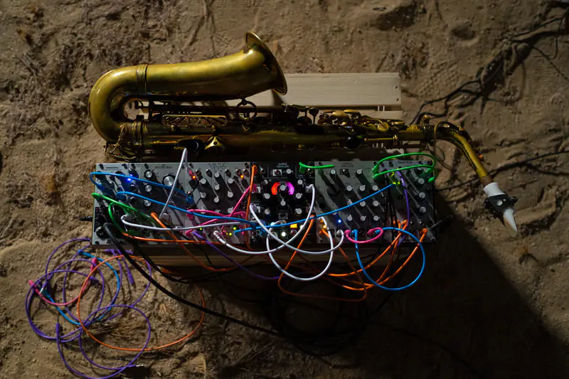

Between acoustic and electronic worlds. I am an emerging musician and sound artist interested in the possibilities of electronic music, improvisation, and creative technology. My practice connects instrumental performance with production, synthesis, and experimental composition. I am particularly interested in the relationship between human gestures and electronic systems. A breath, a note, or a small rhythmic idea can become the starting point for an entirely different sound world. Through my work, I hope to create music that invites close listening and leaves room for surprise. This website documents my ongoing learning, creative experiments, and developing artistic voice.

A photo of my music setup or something that inspires me.
When I listen to music, I often pay attention to the sounds behind the main melody. I like interesting textures, unusual rhythms, and creative recording techniques. I also love music that feels personal and honest. I hope to keep discovering new artists and adding more favorites to this journal.